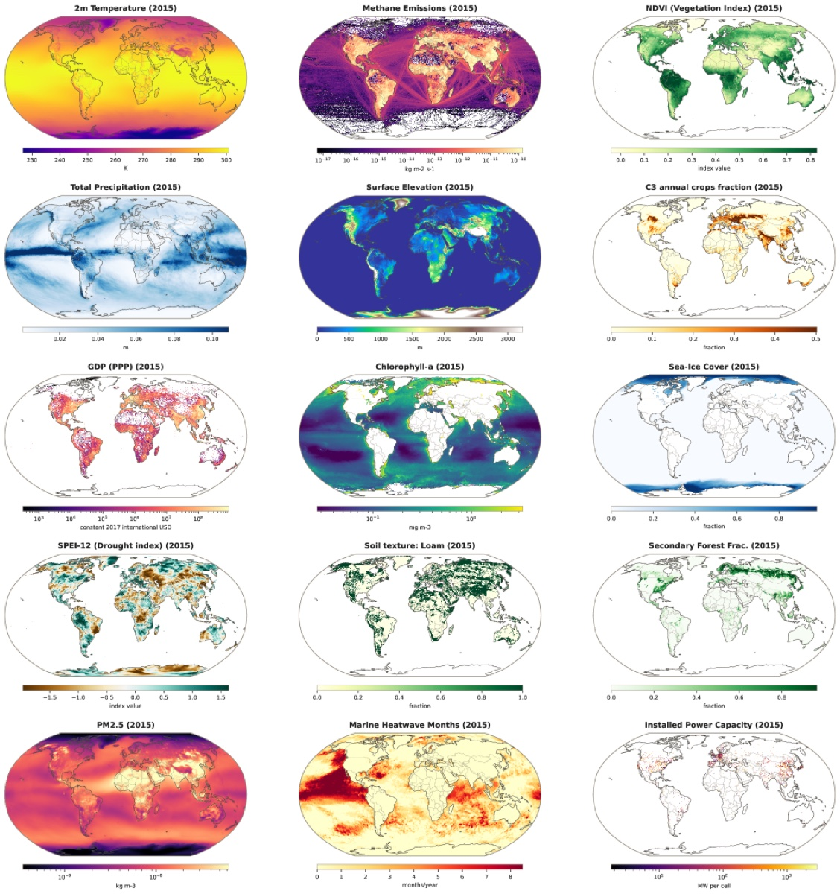
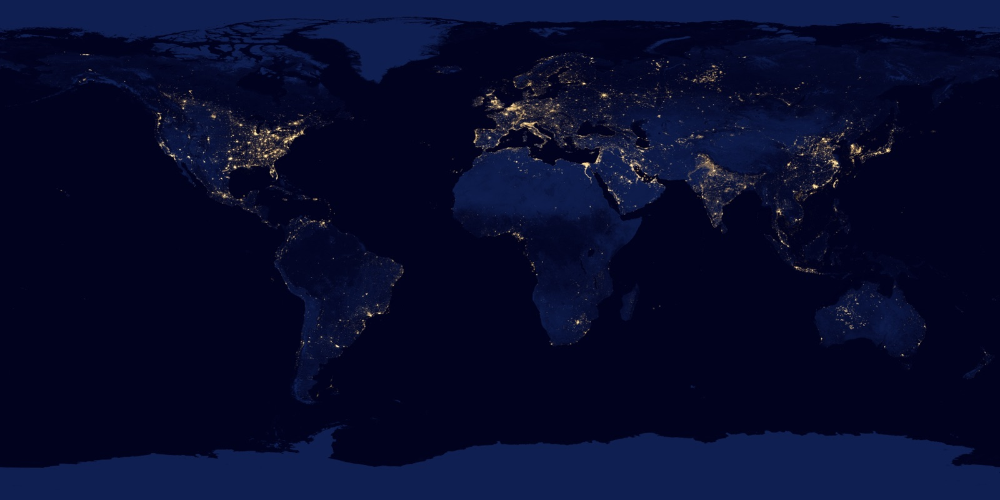

Executive Summary
지구 시스템 파운데이션 모델은 지난 몇 년간 기상·해양·빙권 같은 물리 데이터만 먹고 자랐습니다. ClimaX나 ECMWF의 AIFS가 그 길을 대표합니다. 정작 그 환경을 바꾸는 동시에 그 변화에 반응하는 존재, 즉 사람은 학습에서 빠져 있었습니다. 2026년 7월 밀라노 폴리테크닉과 CMCC 연구팀이 arXiv에 올린 WorldTensor는 그 공백을 메우려는 데이터셋입니다. 배출량·토지이용·인프라·재해·사회경제 지표까지 757개 변수를 0.25도 격자 하나에 정렬해, 지구를 움직이는 사람을 처음으로 물리 데이터와 같은 좌표에 올렸습니다.
핵심은 규모가 아니라 정렬입니다. 기후 재분석 자료는 촘촘한 격자로 오지만, 인구·GDP·발전소·분쟁 통계는 점과 행정구역, 드문 연도 스냅샷으로 흩어져 있습니다. 해상도도 투영법도 시간 주기도 제각각이라, 데이터가 아무리 많아도 그대로는 한 모델에 넣을 수 없습니다. WorldTensor가 한 일은 오류를 고치는 정제가 아니라, 서로 말이 안 통하던 자료를 하나의 공통 좌표계로 화해시키는 작업이었습니다.
기후과학을 다루지 않는 사람에게도 이 사례는 익숙한 질문 하나를 남깁니다. AI-Ready Data의 진짜 난도는 결측치를 채우는 정제가 아니라, 이질적인 출처에 공통 언어를 주는 일이라는 것입니다. 그리고 그 공통 언어를 누가 어떤 격자로 정하느냐가 모델이 세상을 보는 방식을 결정합니다.

757개 변수
한 격자에 정렬
기후·배출·토지이용·재해·사회경제를 같은 좌표계로
103만 칸
0.25도 격자
지구 표면을 720×1,440 = 103만6,800개 칸으로 분할
인간 변수 22개
물리 데이터와 같은 칸에
인구·GDP·HDI·야간조명·도시면적·분쟁을 처음으로 정렬
연 단위 한계
단기 신호는 약화
엘니뇨·분쟁은 잡아내지만 COVID형 급변은 흐려짐
지구를 학습한 AI가 못 본 것
지난 몇 년 사이 지구 시스템 파운데이션 모델이 빠르게 늘었습니다. ClimaX는 기후와 날씨를 에뮬레이션하고, ECMWF의 AIFS는 하루 단위 기상을 예측합니다. 이들은 공통점이 하나 있습니다. 기온·강수·해류·해빙 같은 물리 변수만으로 학습했다는 점입니다. 지구를 물리 현상의 집합으로만 본 셈입니다.
이 공백은 관심이 없어서 생긴 것이 아닙니다. 자료의 형태가 애초에 달라서 생긴 구조적 문제입니다. 기후 재분석 자료는 시간당·일일 단위로 지구 전체를 촘촘히 덮는 격자로 옵니다. 반면 인구·GDP·재해·인프라 통계는 격자가 아니라 점(발전소 좌표), 벡터(행정구역 경계), 그리고 몇 년에 한 번 찍히는 드문 스냅샷으로 흩어져 있습니다. 물리 데이터와 인간 데이터는 같은 지구를 기록하면서도 서로 다른 언어로 쓰여 있었습니다.

WorldTensor 연구팀의 문제의식은 여기서 출발합니다. 인간 시스템은 환경 변화를 일으키기도 하고 그 변화에 반응하기도 하는데, 이 둘을 같은 좌표계에 놓고 함께 학습할 자원이 없었다는 것입니다. 배출이 기후를 밀고 기후가 다시 이주와 분쟁을 미는 순환을 하나의 모델이 보려면, 먼저 배출과 기후와 분쟁이 같은 칸 안에 있어야 합니다.
핵심 관찰: 지구 시스템 AI가 사람을 못 본 이유는 데이터가 없어서가 아니라, 사람의 데이터가 물리 데이터와 다른 형태로 흩어져 있었기 때문입니다. 통합을 막은 것은 양이 아니라 좌표계였습니다.
흩어진 자료를 한 좌표계로 화해시키다
WorldTensor는 757개 변수 계열을 0.25도 정규 격자 하나에 올립니다. 시간에 따라 변하는 변수 658개와 지형·토양처럼 고정된 정적 레이어 99개를 합친 숫자입니다. 격자는 위도·경도를 0.25도 간격으로 잘라 지구 표면을 720×1,440, 즉 103만6,800개 칸으로 나눕니다. 기후(ERA5) 276개, 토지이용(LUH3) 112개, 정적 지형·토양 99개, 배출량(EDGAR·CEDS·ODIAC) 67개, 에너지 52개, 대기질 40개, 재해·분쟁 28개, 그리고 인구밀도·GDP·HDI·야간조명·도시면적을 담은 인간 시스템 22개가 모두 이 격자 위에서 만납니다.
연구팀은 이 작업을 정제(cleaning)가 아니라 화해(harmonisation)라고 부릅니다. 결측치를 채우거나 오류를 고치는 일이 아니라, 서로 다른 해상도·투영·시간 주기로 흩어진 자료를 강제로 하나의 공통 좌표계에 맞춰 넣는 일이기 때문입니다. 방법은 자료의 형태에 따라 세 갈래로 나뉩니다.
2.1세 가지 정렬 기법
- 공간 조화 — 기온처럼 연속적으로 변하는 필드는 쌍선형 재샘플링으로, 토지피복처럼 범주형인 값은 최근접 이웃 할당으로 격자에 맞춥니다. 원본이 격자보다 더 미세하면 면적가중 평균으로 눌러 담습니다.
- 래스터화 — 발전소나 지진처럼 점으로 찍힌 데이터는 해당 칸에 직접 넣는 동시에, 가장 가까운 사건까지의 거리를 담은 별도 필드로도 변환합니다. 행정구역 같은 선·면 데이터는 미터 단위 좌표계에서 밀도로 추정합니다.
- 시간 조화 — 자료가 없는 연도를 임의로 채워 넣지 않고 그대로 비워 둡니다. 없는 값을 지어내는 대신 원본의 가용성을 정직하게 반영하겠다는 원칙입니다.
결과물은 46GB, NetCDF 파일 5만2,823개로, 1900년부터 2025년까지를 아우릅니다. 데이터는 CC BY 4.0으로, 파이프라인 코드는 MIT로 전량 공개돼 있습니다. 도메인마다 커버 기간이 달라 기후는 1940년부터, 대기질은 2003년부터 시작하지만, 모두 연 단위 통계로 집계되어 같은 시간 축 위에 놓입니다.
믿을 만하게 합쳤다는 증거
이렇게 강제로 정렬한 데이터가 그저 형식만 맞춘 것이 아니라 실제로 쓸 만하다는 것은 어떻게 알까요. 연구팀은 파운데이션 모델을 직접 학습시켜 성능을 자랑하는 대신, 데이터 자체가 신뢰할 만한지를 다섯 갈래로 검증했습니다. 연구 인프라로서 정직하게 포지셔닝한 선택입니다.
가장 설득력 있는 것은 시간 신호를 실제로 잡아내는지입니다. 1997–98년과 2015–16년의 엘니뇨가 통계적으로 감지됐고, 2012–15년 시리아 내전은 분쟁 사건과 사망자 지표에서 뚜렷한 이상치로 나타났습니다. 연 단위로 눌러 담았는데도 알려진 사건들이 데이터 안에 살아 있다는 뜻입니다. 물리적 타당성 검사에서는 대표 변수 54개 전부가 예상 범위를 통과했고, 범위를 벗어난 픽셀은 0.1% 미만이었습니다. 데이터 내부의 앞뒤도 맞았습니다. 원본에서 다른 형태로 흩어져 들어온 토지이용 수지는 격자로 옮긴 뒤에도 전체 격자점의 92.7%가 목표치 오차 ±0.02 안으로 수렴했습니다.
공간 구조 분석은 인간 변수와 물리 변수가 서로 다른 공간 스케일을 갖는다는 점을 그대로 보존했음을 보여 줍니다. 기온은 유효 범위가 약 2,580km로 광역적으로 부드럽게 퍼지지만, GDP는 약 300km로 훨씬 국소적으로 뭉쳐 있습니다. 사람이 만든 값은 도시와 국경 안에 갇히고, 물리 값은 대륙을 가로질러 흐른다는 상식이 데이터에서 정량으로 확인된 셈입니다. 여기에 더해, 어떤 지도 라벨도 주지 않고 통계 기법(ICA)만으로 보레알 숲·열대우림·건조지역 같은 생태기후 구역이 자동으로 복원됐습니다.
가장 강한 신호: 강제로 격자에 맞춰 넣었는데도 엘니뇨와 시리아 내전 같은 실제 사건, 그리고 물리와 인간 변수의 서로 다른 공간 스케일이 살아남았습니다. 정렬이 신호를 뭉개지 않았다는 것을, 지도 라벨 없이 복원된 생태기후 구역이 다시 한번 뒷받침합니다.
정직하게 남겨 둔 한계
WorldTensor는 자신의 약점을 숨기지 않습니다. 0.25도라는 해상도는 지리적 세부와 전역적 완전성 사이의 타협입니다. 10~30m급 고해상도 원격탐지 자료는 평균화 과정에서 미세한 도시 구조가 사라지고, 반대로 발전소나 분쟁처럼 희소한 점 관측은 격자화되면서 실제보다 정밀해 보일 위험이 있습니다.
연 단위 집계도 마찬가지입니다. 장기 추세나 연간 결합을 보기에는 알맞지만, 하루 안에 나타났다 사라지는 신호는 흐려집니다. 앞서 엘니뇨와 분쟁은 잡아냈지만, COVID-19처럼 짧게 튀었다 가라앉는 급변은 연 단위 평균에 묻혀 약해졌습니다. 저자들은 계절 이하의 충실도가 필요하면 원본 일·월 자료를 쓰라고 직접 권합니다. 또 하나, 사회경제 지표는 Global South에서 상대적으로 희소해, 초기 다중모달 노력이 Global North에 치우쳐 있다는 자기비판도 논문에 담겨 있습니다.
정리: 격자를 어디에 긋느냐는 선택은 무언가를 담는 동시에 무언가를 흘립니다. 0.25도·연 단위라는 결정이 대륙 규모의 장기 흐름은 살리지만 도시 규모의 순간은 놓칩니다. 한계를 감추지 않은 것이 오히려 이 데이터의 신뢰를 높입니다.
정제가 아니라 공통 언어를 정하는 일
기후과학 바깥에서 보면, 데이터를 다뤄 본 사람이라면 누구나 아는 장면이 남습니다. AI-Ready Data를 준비한다고 하면 우리는 대개 결측치를 채우고 이상치를 걸러 내고 형식을 맞추는 일을 떠올립니다. 데이터를 깨끗하게 만드는 문제로 여기는 것입니다. 그런데 WorldTensor가 정면으로 마주한 문제는 그보다 한 단계 앞에 있습니다. 서로 다른 언어로 쓰인 자료를 어떤 공통 좌표계 위에 올릴 것인가.
재분석 자료도, 위성 관측도, 인구 통계도 각자의 세계에서는 이미 정제된 데이터입니다. 문제는 이들이 각자 다른 해상도와 시간 주기로 흩어져 있어 한자리에 놓이지 못한다는 것이었습니다. 데이터의 품질이 아니라 데이터의 정렬이 학습 가능 여부를 갈랐습니다. 아무리 깨끗한 자료라도 공통 언어가 없으면 서로 대화할 수 없고, 대화하지 못하는 데이터는 아무리 많아도 하나의 모델을 만들지 못합니다.
그리고 그 공통 언어를 누가 정하느냐가 중요합니다. WorldTensor가 0.25도·연 단위를 택하는 순간, 그 격자에 담기는 세계와 흘러 나가는 세계가 함께 정해졌습니다. 대륙 규모의 장기 흐름은 살아남았고, 도시 규모의 순간은 사라졌습니다. 격자를 정하는 일은 중립적인 기술 작업이 아니라, 모델이 무엇을 볼 수 있고 무엇을 못 볼지를 앞서 결정하는 일입니다. 데이터를 준비할 때 우리가 가장 먼저 물어야 할 질문은 어쩌면 결측치를 어떻게 채울까가 아니라, 이 데이터에 어떤 공통 언어를 줄 것인가일지 모릅니다.
한 줄 요약: 정제는 데이터를 깨끗하게 만들지만, 정렬은 데이터가 서로 대화할 수 있는지를 정합니다. WorldTensor는 이질적인 출처에 공통 언어를 주는 일이 AI-Ready Data의 진짜 관문임을 보여 준 사례입니다. 그 공통 언어를 어떤 격자로 정하느냐가 곧 모델이 세상을 보는 방식을 정합니다.
참고문헌
학술 논문
- 1.Rodriguez-Pardo, C., & Tavoni, M. (2026). "A harmonised dataset for Earth system foundation models." arXiv:2607.03298. (Scientific Data 게재 확정)
데이터·코드
- 2.Rodriguez-Pardo, C., & Tavoni, M. (2026). "WorldTensor: A harmonised dataset for Earth system foundation models." Zenodo. doi:10.5281/zenodo.19047618. (CC BY 4.0)
- 3.Rodriguez-Pardo, C. (2026). "worldtensor-pipeline." GitHub. (MIT)
업계·보도
- 4.Integrated Assessment Modeling Consortium. (2026). "A harmonised dataset for Earth system foundation models." IAMC Community News.